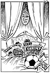

|
Dagens Inge:  Inge-galleri Tidligere artikler |
Dagens ledere Morgen: London, et bombemål? SV-strid |
Aften: Byrådssvikt straffer seg |
|
Kommentar Italia: Valg, men neppe avklaring I RETUR: Italias politikere valgte å sende ballen til velgerne, men får de uløste sakene i retur når det nye parlamentet kommer sammen. PER ANDERS MADSEN Kommentatoren er Aftenpostens korrespondent i Roma.
En teaterpolitikk uten manuskript
|
I dag Uheldig språkbruk NASJONALISME: Noe helt annet enn nynazisme ØYSTEIN SØRENSEN Professor i historie ved UiO.
| |
|
Kronikk EUs "år for livslang læring" - og Norge KJELL VEIVÅG EU-kommisjonen har utpekt 1996 til et "europeisk år for livslang læring". Det har lenge vært et slagord også i norsk politikk, men Norge er kommet svært kort i å utvikle en strategi for opplæring av voksne. Thorbjørn Jaglands forslag har gitt spørsmålet ny aktualitet. Kjell Veivåg, undervisningsdirektør i NKS-gruppen, skriver om hva vi bør kreve av en norsk strategi på dette felt.
|
||